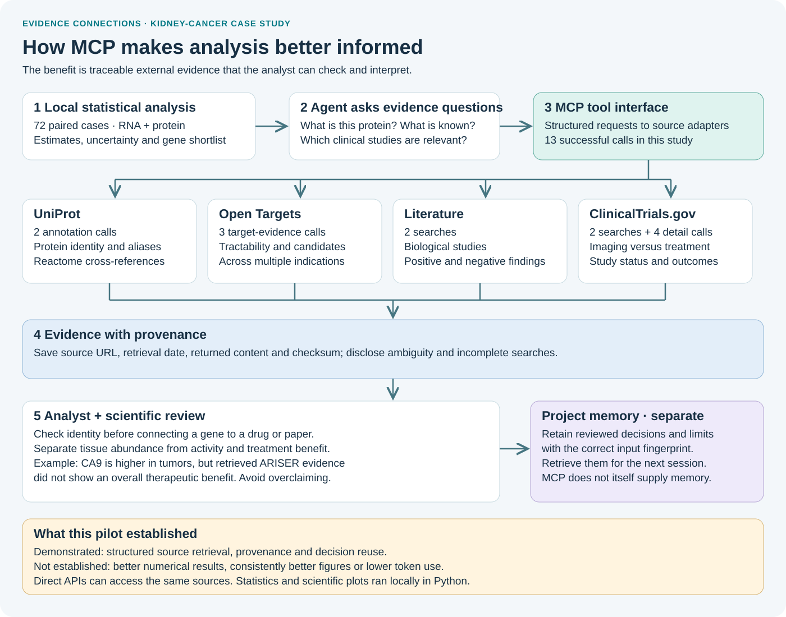
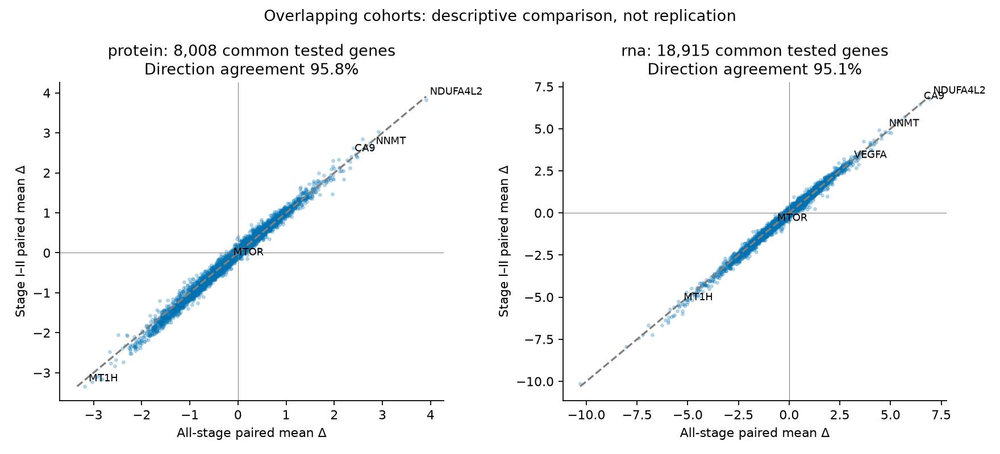
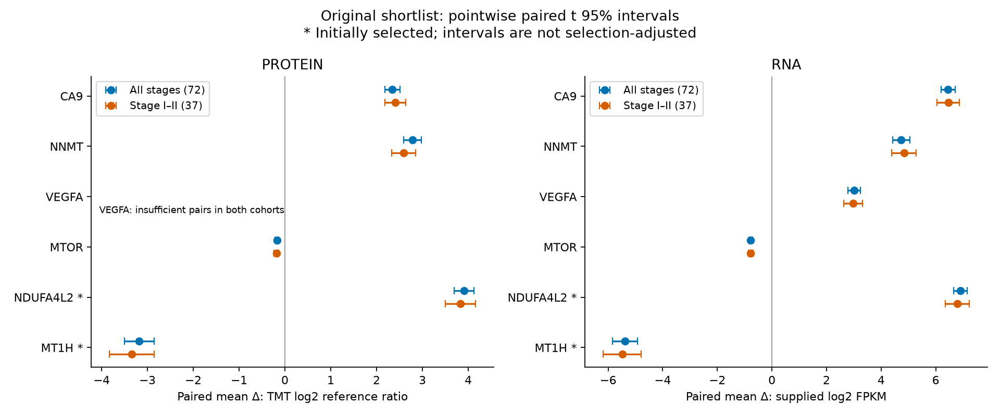
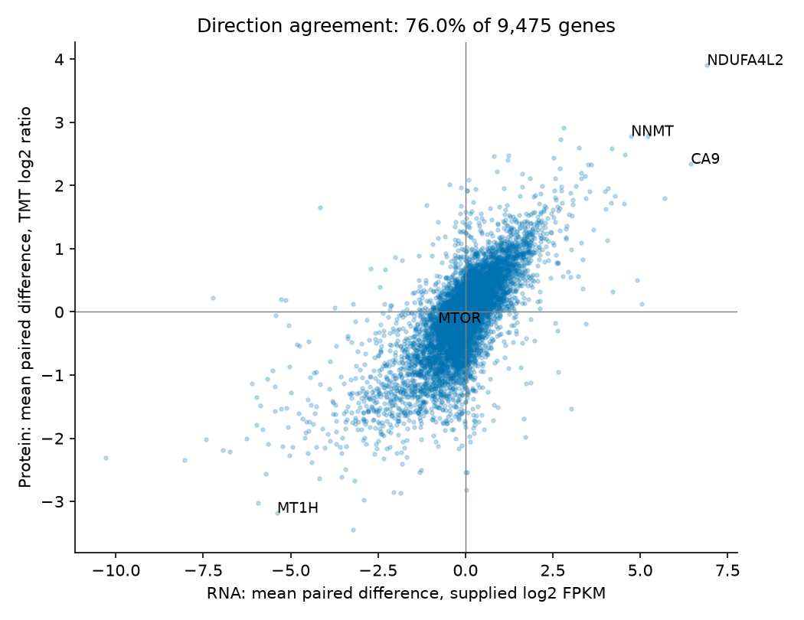
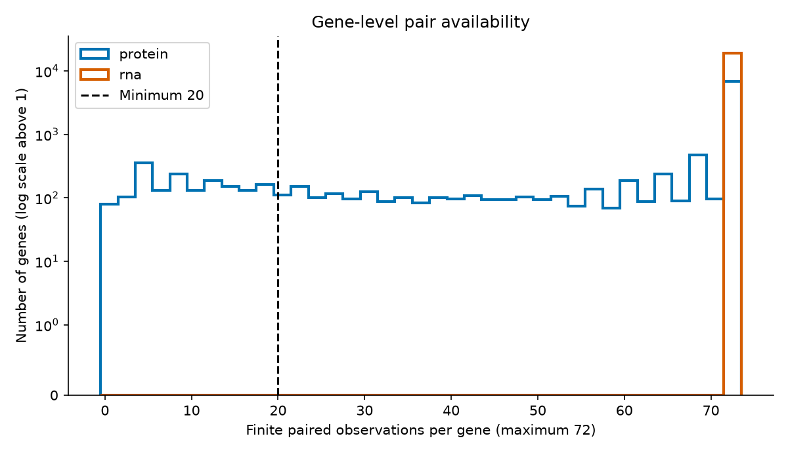
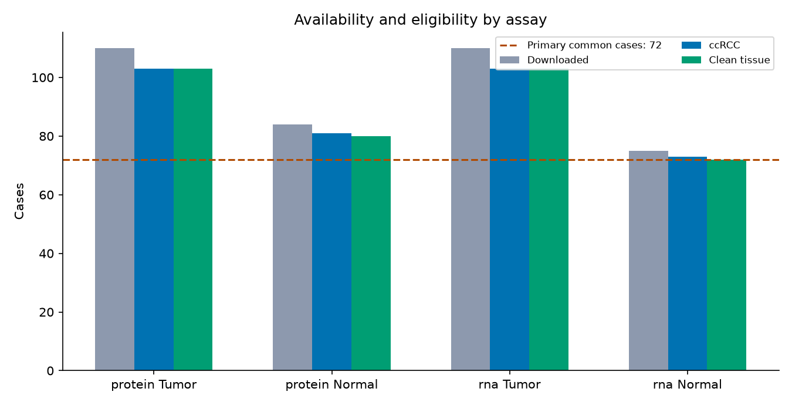
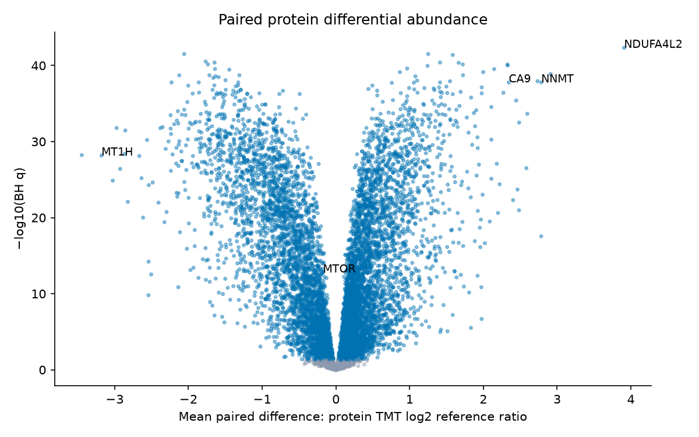

CPTAC KIDNEY CANCER · PROTEOGENOMICS · MATCHED PILOT
Two workflows.
One molecular dataset.
From 110 downloaded tumors to 72 eligible patients with paired tumor/normal RNA and protein measurements. Two fresh agents, the same source access, and a fresh-session sensitivity analysis in 37 early-stage cases.
Original skills versus controller + MCP + memory. Jev excluded. Exploratory research; no treatment-efficacy or causal claims.
What we learned
Both configurations recovered the same scientific results and continued successfully. The upgraded bundle made 13 native MCP calls and retrieved six structured decisions, but used 28.5% more uncached input tokens and 14.0% more output tokens. This pilot demonstrates auditable reuse, not an efficiency or overall quality win.
One pair of runs cannot establish a general efficiency advantage. Data processing, evidence interpretation and visual quality are evaluated separately from runtime compliance.
Full interpretation and limitations · Independent scientific reviewHow MCP supports the analysis

MCP standardized retrieval and provenance in this study. Direct APIs can access the same evidence. Better interpretation depends on the analysis and review; this pilot did not demonstrate superior results or token savings.
Explore the reports
The report and figure include the reviewed VEGFA count correction (1 all-stage / 0 early-stage). Original measured artifacts remain in the audit archive; token totals and review scores are unchanged.
Actual model usage
Cached input is a subset of total input; uncached = total − cached. These are accumulated model-call tokens, not the context-window size or billed dollars. Setup, reviewer and parent-orchestration usage are excluded. Both arms could reuse ordinary saved files and source snapshots.
Telemetry · Actual MCP calls · Initial-artifact preservationBaseline · figure gallery

effect comparison · open for full size and consult report captions
shortlist comparison · open for full size and consult report captions
concordance · open for full size and consult report captions
missingness · open for full size and consult report captions
availability · open for full size and consult report captions
protein differential · open for full size and consult report captionsUpgraded · figure gallery
Evidence, with limits
Processed matrices came from LinkedOmics; published CPTAC clinical annotations supplied histology and specimen exclusions. UniProt provides mappings and Reactome annotations; Open Targets supplies tractability and drug/candidate records across indications. Literature and trial records require independent interpretation. Pathway annotation is not enrichment, and a drug-target link is not kidney-cancer efficacy.
Shared source guide · Frozen evaluation rubric · Experiment protocol